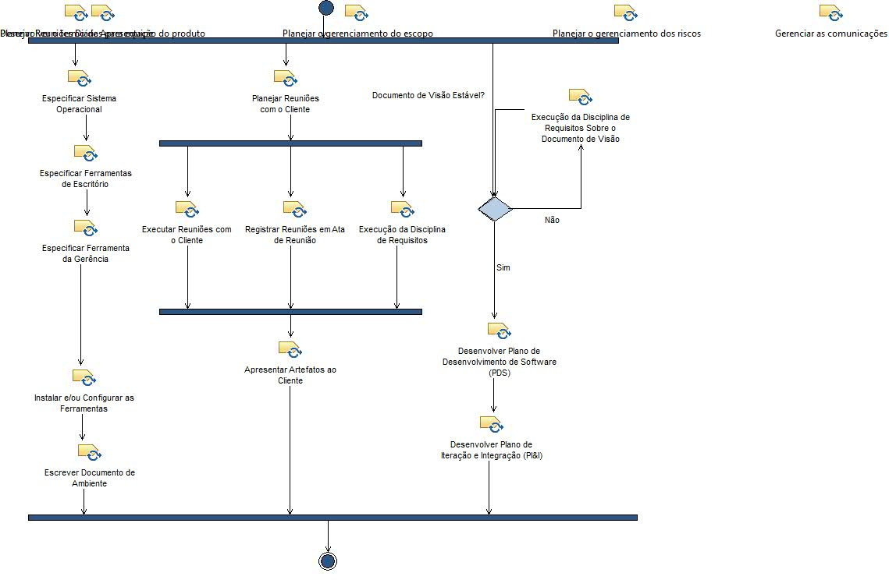
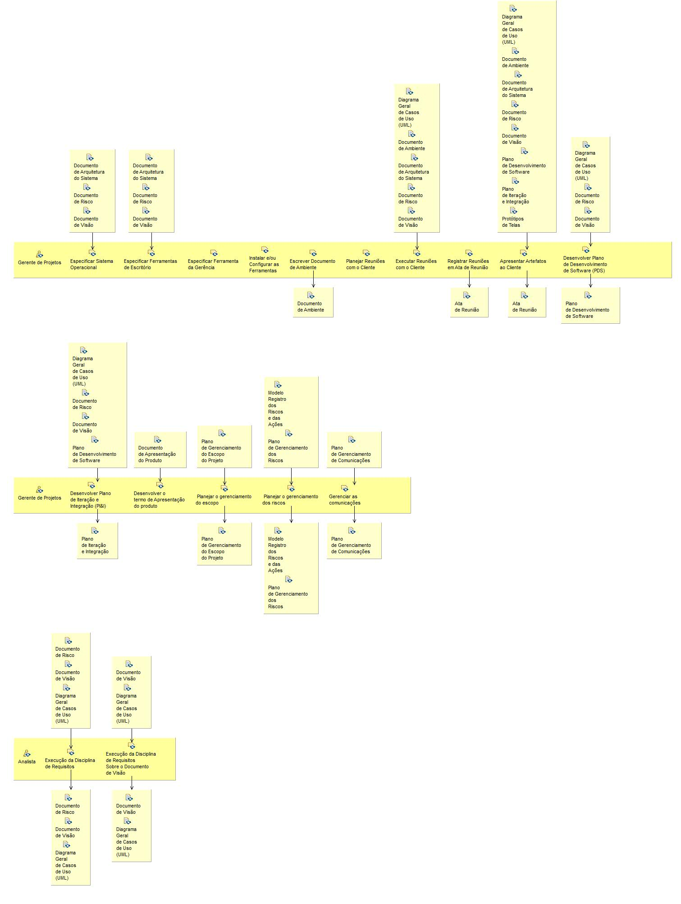

Activity: Gerência de Processo Concepção
Na fase de concepção, a disciplina de Planejamento e Gerência é uma das que consome mais tempo. A principal preocupação do Gerente tem que ser criar um plano que seja bem real, com menor taxa de falhas na medida do possível.
Description
Work Breakdown Structure
Team Allocation
Work Product Usage
Workflow


Work Breakdown